本章学习目标（Objectives）
- 理解缩放、旋转、平移等基本变换如何用矩阵表示；
- 掌握变换矩阵的组合与顺序问题；
- 理解坐标系变换（Frame 变换）与变换矩阵的区别与联系；
- 熟悉 DirectXMath 中构建变换矩阵的函数。
我们用矩阵来移动、旋转、缩放物体——这就是"变换"。本章把前两章的向量与矩阵串起来，是全书数学部分的收官之战。
3.1 线性变换（Linear Transformations）
定义与矩阵表示
若函数 τ 满足 τ(u + v) = τ(u) + τ(v) 且 τ(kv) = kτ(v)，称为线性变换。任何 3D 线性变换都等价于左乘一个 3×3 矩阵——这就是"用矩阵做变换"的理论根基。
3.1.3 缩放（Scaling）
各轴独立缩放；某个轴取负值则产生"镜像"（reflection）。注意缩放改变法线的长度，法线要特殊处理（第 8 章）。
3.1.4 旋转（Rotation）
绕各坐标轴的旋转矩阵（左手系、从轴正端看顺时针为正角度）：
Rx(θ) = | 1 0 0 |
| 0 cosθ sinθ |
| 0 −sinθ cosθ |
Ry(θ) = | cosθ 0 −sinθ |
| 0 1 0 |
| sinθ 0 cosθ |
Rz(θ) = | cosθ sinθ 0 |
| −sinθ cosθ 0 |
| 0 0 1 |
旋转矩阵是正交矩阵：行（列）向量互相正交且为单位长度，因此 R⁻¹ = Rᵀ，且保持长度和角度不变。绕任意轴 n 的旋转矩阵由 Rodrigues 公式给出（书中给出完整矩阵与推导），DirectXMath 里就是 XMMatrixRotationAxis。
3.2 仿射变换（Affine Transformations）
3.2.1 齐次坐标
平移不是线性变换（原点会被移走），无法用 3×3 矩阵表达。解法：引入第 4 个分量 w——点的 w=1，向量的 w=0。平移矩阵 T 的最后一列（行向量约定）携带平移量：
用 4×4 矩阵后：点 p·T = p + b（被平移），向量 v·T = v（向量不平移——方向量没有位置，这正符合物理直觉）。这就是 w 分量的威力。
3.2.4 缩放与旋转的仿射矩阵
把 3×3 的 S/R 放进 4×4 的左上块，最后一行补 (0,0,0,1) 即可。书中还给出"绕任意轴/任意点"的组合构建思路，例如绕任意点的旋转 = 先平移到原点 → 旋转 → 平移回去。
3.2.5 仿射矩阵的几何解释
仿射矩阵的每一行有含义：前 3 行的前 3 个元素分别是变换后坐标系的 x/y/z 轴向量（含缩放与旋转），最后一行是平移量。也就是说，矩阵同时编码了"新坐标系长什么样"。
3.3 变换的组合（Composition）
多个变换按顺序左乘（行向量约定）：v′ = v·S·R·T 表示先缩放、再旋转、最后平移——这正是构造"世界矩阵"的标准顺序。由结合律可以预先把 SRT 乘成一个矩阵。
3.4 坐标系变换（Change of Coordinate Transformations）
这一节最容易混淆，也是最重要的一节：场景中同一个点/向量，在不同坐标系（Frame）下有不同坐标。坐标系变换矩阵 M 把"A 坐标系下的坐标"换成"B 坐标系下的坐标"。
- 对点：M 的行 = B 坐标系在 A 坐标系中的原点位置和轴向量（齐次形式）。
- 对向量：只用 3×3 部分（轴向量），不参与平移。
- 关键结论：坐标系变换矩阵的行，就是新坐标系在旧坐标系中的"描述"。反过来 B→A 就用 M⁻¹。
3.5 变换矩阵 vs 坐标系变换矩阵
两者形式相同、含义相反：变换矩阵"动的是几何体"，坐标系变换"动的是坐标系"（反方向的等价描述）。书中用"电梯与楼梯"的比喻说明：改变参照系与反向变换物体，视觉效果一样。理解这层等价性，视图矩阵（camera 的逆变换）就好懂了——第 5 章见。
3.6 DirectXMath 变换函数
XMMATRIX S = XMMatrixScaling(sx, sy, sz); // 缩放 XMMATRIX R = XMMatrixRotationRollPitchYaw(px, py, pz); // 绕 x(pitch)/y(yaw)/z(roll) XMMATRIX R2 = XMMatrixRotationAxis(axis, angle); // 绕任意轴 XMMATRIX T = XMMatrixTranslation(tx, ty, tz); // 平移 XMMATRIX W = S * R * T; // 组合成世界矩阵 // 用 4×4 矩阵变换点/向量： XMVECTOR p2 = XMVector3TransformCoord(p, W); // 点：w=1，含平移 XMVECTOR v2 = XMVector3TransformNormal(v, W);// 向量：w=0，不含平移 // 坐标系变换： XMMATRIX M = XMMatrixMultiply(A, B); // 组合 frame 变换
本章小结
- 线性变换（缩放/旋转/剪切）⟺ 3×3 矩阵；加上平移需要齐次坐标 + 4×4 矩阵（点 w=1，向量 w=0）。
- 旋转矩阵正交（R⁻¹ = Rᵀ），保持长度角度；绕任意轴旋转用 XMMatrixRotationAxis。
- 组合顺序 = 作用顺序：v·S·R·T；结合律允许预合并。
- 坐标系变换矩阵的行 = 新坐标系在旧坐标系中的描述；反向用逆矩阵。
- DirectXMath：Scaling / RotationAxis / Translation 三板斧，Coord 变点、Normal 变向量。
到此数学篇完结。接下来进入第二部分——真正的 Direct3D。
🖼️ 原书插图（18 张，点击展开）
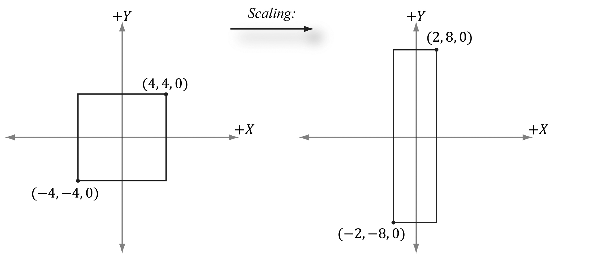
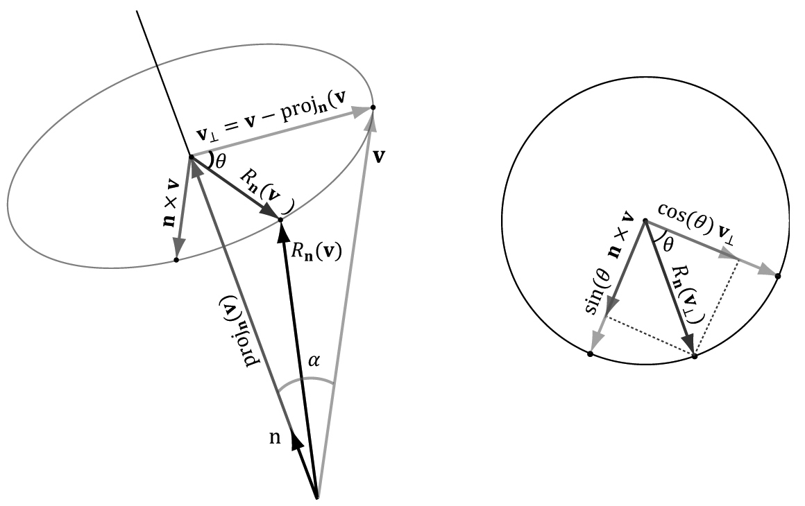
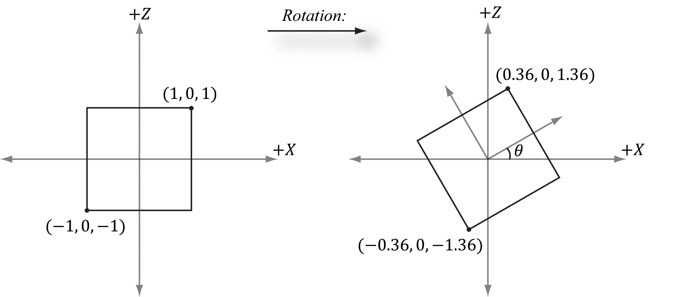
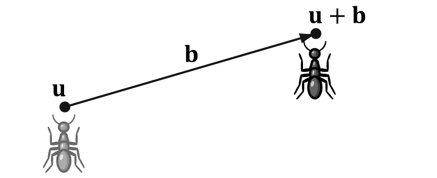
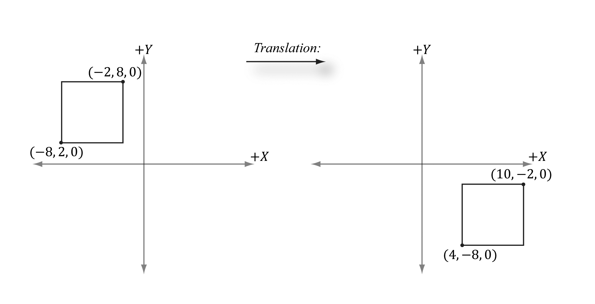
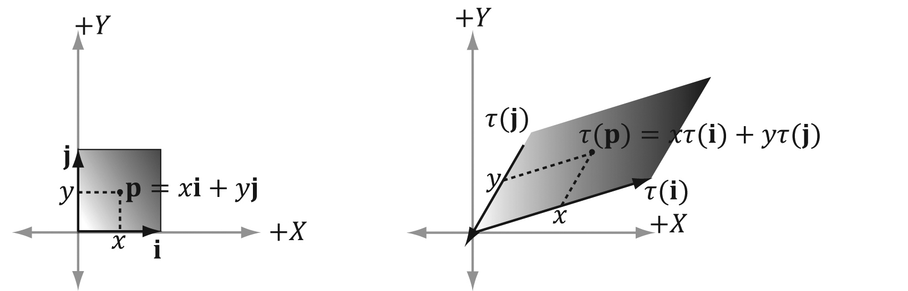
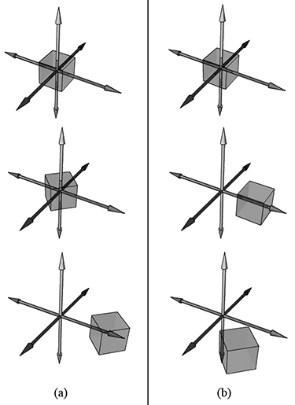
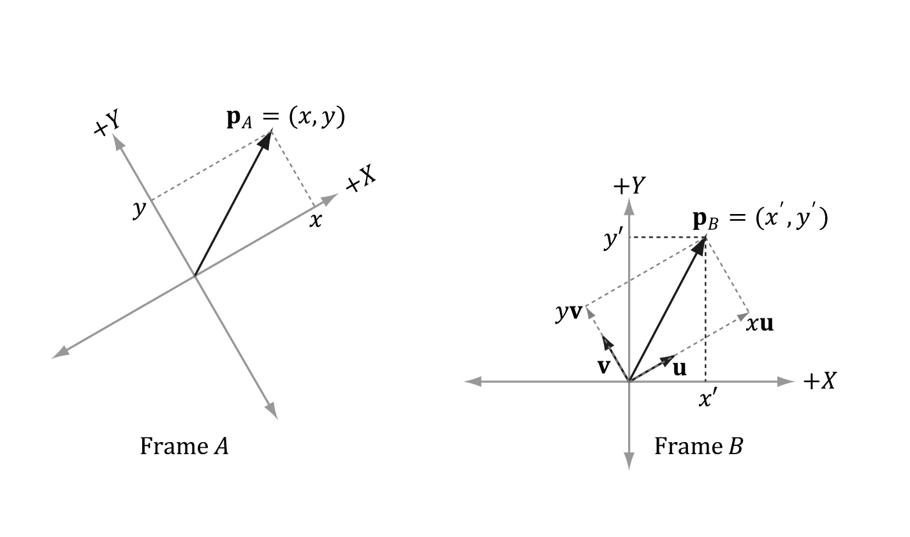
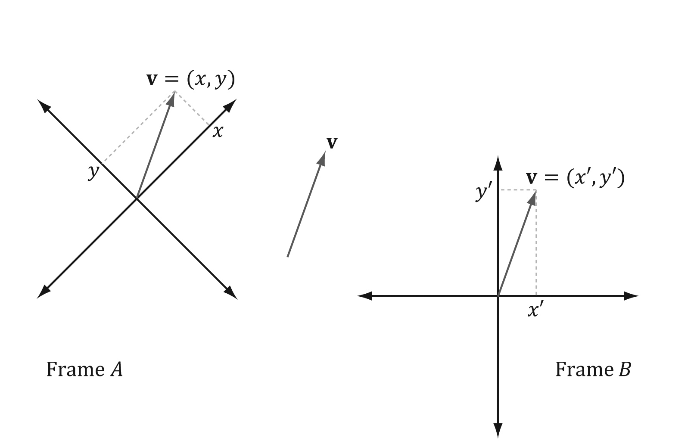
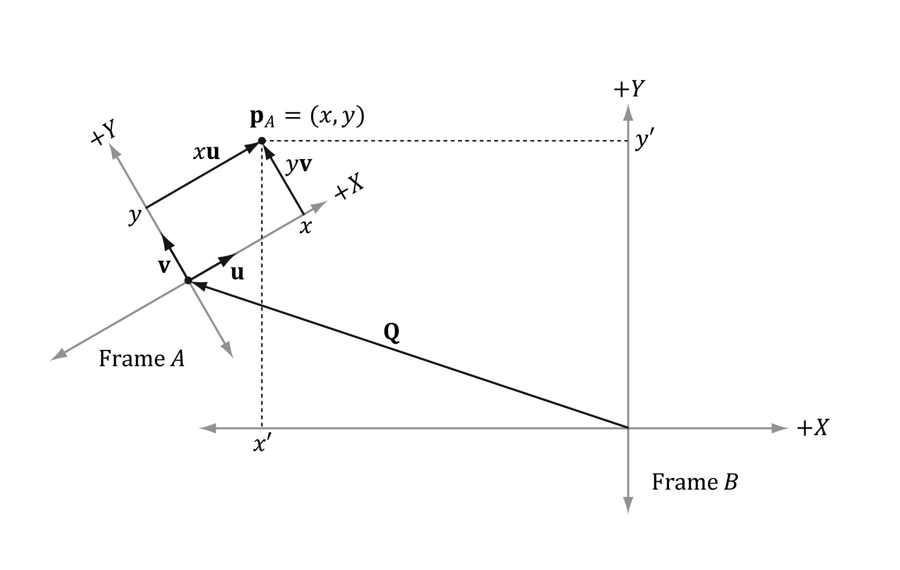
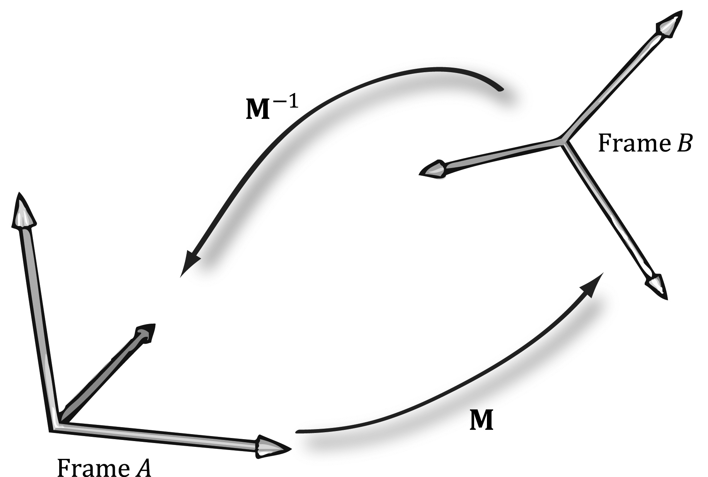
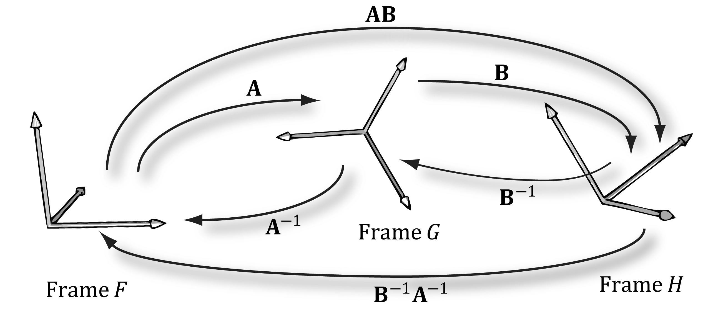
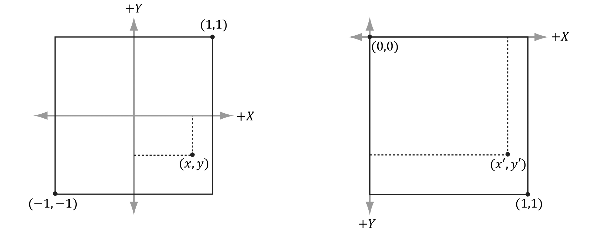
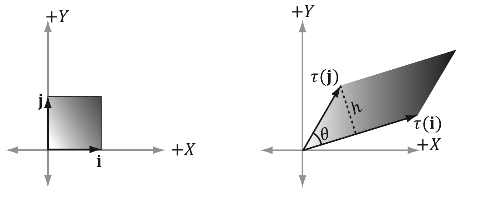
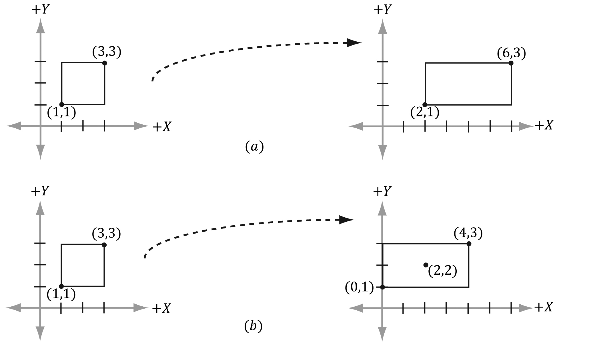
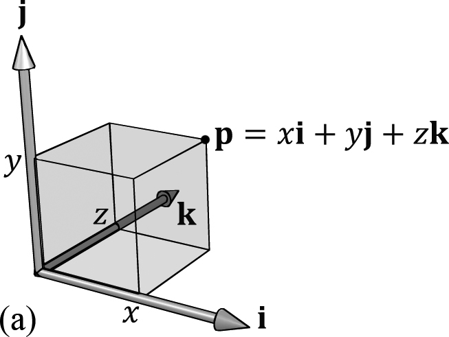
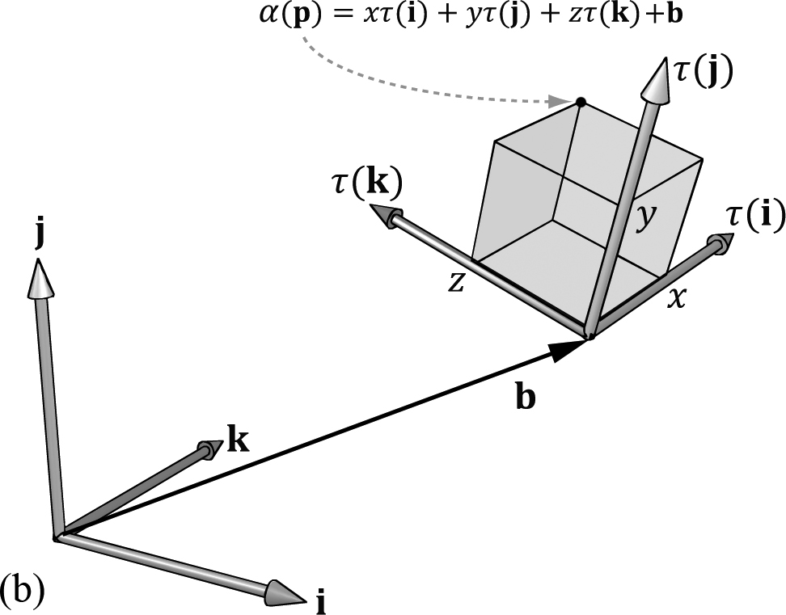